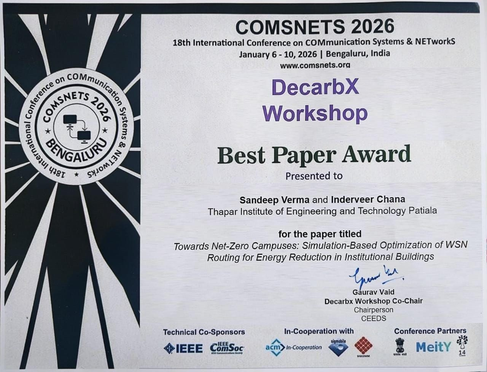
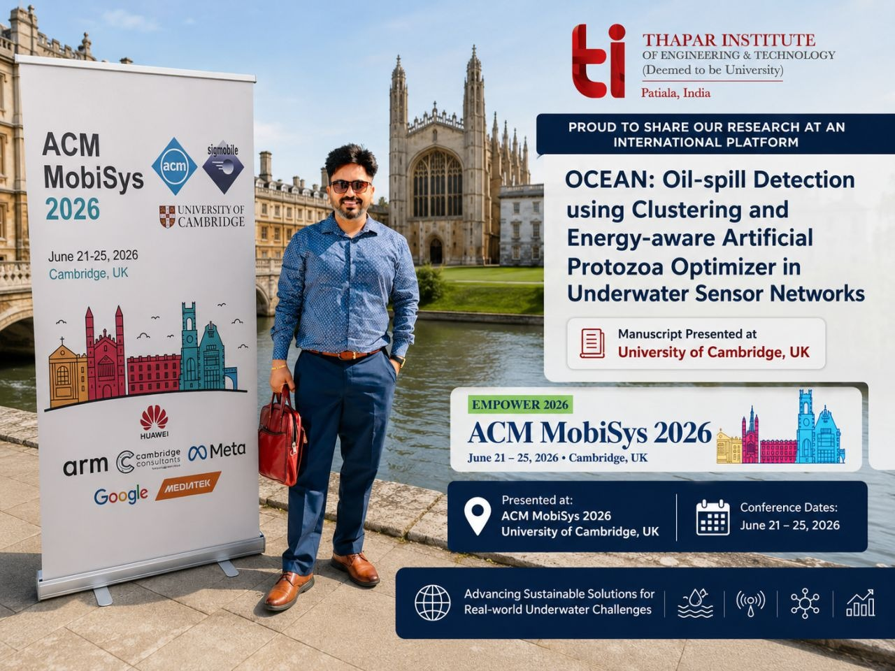
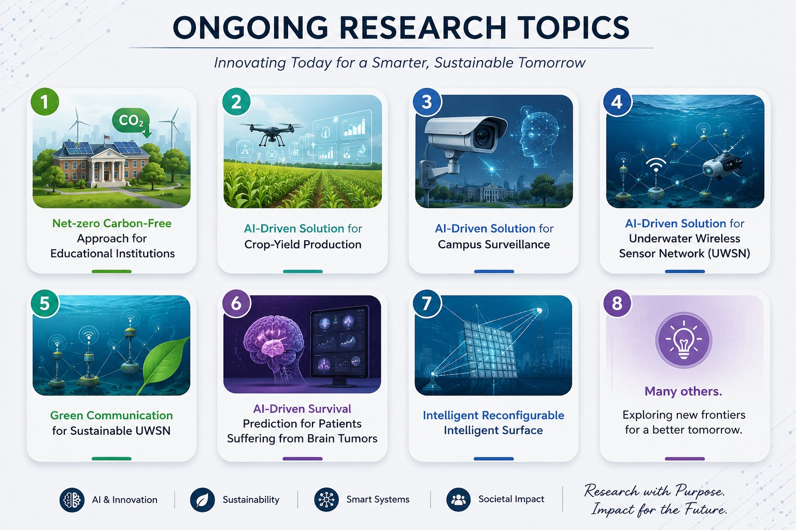
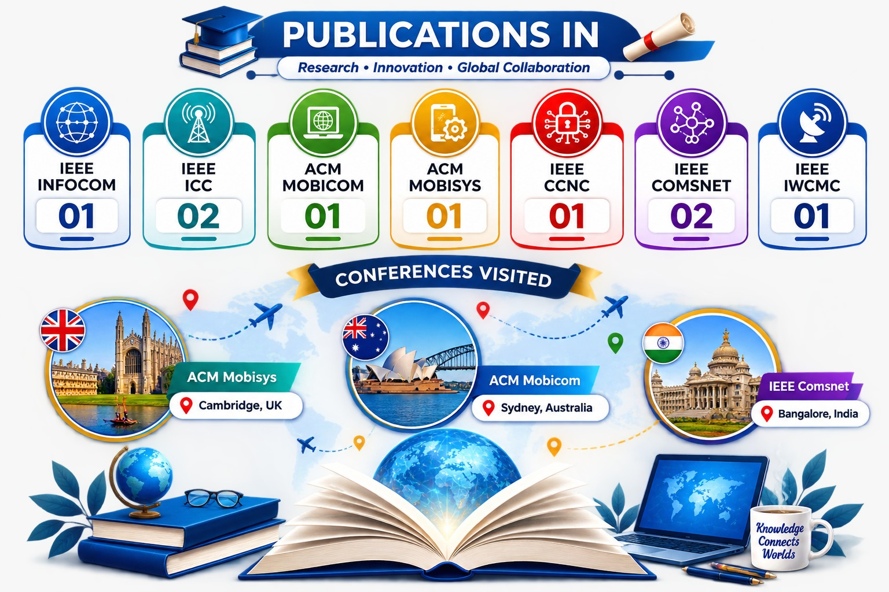

Dr. Sandeep Verma
Assistant Professor & Researcher
Passionate researcher exploring AI, intelligent routing, network security, blockchain, and wireless sensor networks. Dedicated to developing practical and innovative technologies for next-generation smart cities. Recognized among Stanford University’s global top 2% scientists.
About Me
I am an accomplished academician and researcher currently serving as an Assistant Professor in the Department of Computer Science and Engineering at Thapar Institute of Engineering and Technology, Patiala.
With over 13 years of academic experience, my journey spans extensive research in the Internet of Things (IoT) and smart cities. My focus lies in developing energy-efficient and secure solutions for smart cities, industrial cyber-physical systems (CPS), and UAV-assisted networks.
IEEE Senior Member
Recognized for professional maturity and significant performance.
Associate Editor
IET Wireless Sensor Systems (Wiley).
Academic Journey
Post-Doctorate (3GPP Standardization)
IIT Kharagpur
Ph.D in Energy-Efficient Wireless Sensor Network
NIT Jalandhar
Master in Engineering
NITTTR Chandigarh (Panjab University)
Bachelor of Technology
IKG PTU
Professional Experience
Assistant Professor
Thapar Institute of Engineering & Technology, Patiala
- Teaching undergraduate and postgraduate courses in Computer Science.
- Conducting research in WSN, IoT, UAV-assisted networks, and AI-based routing.
- Mentoring M.Tech and PhD research scholars.
Project Lead — UAV-Assisted Drone Project
NIT Jalandhar
- Led a government-funded research project on UAV-assisted wireless sensor networks.
- Designed energy-optimised path planning algorithms.
- Granted US Patent (US2025/0097733 A1).
Research Associate – III
IIT Delhi
- Advanced research in cyber-physical systems (CPS) and Industrial IoT.
- Contributed to the AGRIC project for industrial extreme environments.
Assistant Professor
Dr B R Ambedkar National Institute of Technology, Jalandhar
- Delivered courses on Computer Networks, Internet of Things, and Data Structures.
- Supervised undergraduate final year projects in WSN and IoT domains.
Areas of Expertise
WSN & Routing
Developing energy-efficient routing algorithms for heterogeneous wireless sensor networks with multiple data sinks.
Internet of Things
Designing and optimizing IoT architectures for smart cities, industrial CPS, and extreme environments.
AI Integration
Applying artificial intelligence and machine learning for green routing and network lifetime optimization.
Blockchain Security
Enhancing network security through blockchain-integrated wireless sensor networks.
Conferences & Events


Selected Publications
Genetic Algorithm-Based Optimized Cluster Head Selection for Single and Multiple Data Sinks in Heterogeneous Wireless Sensor Network
Read PublicationTowards Green Communication in 6G-enabled Massive Internet of Things
Read PublicationAn Intrusion Detection Mechanism for Secured IoMT Framework Based on Swarm-Neural Network
Read PublicationIntelligent and Secure Clustering in Wireless Sensor Network (WSN)-Based Intelligent Transportation Systems
Read PublicationIntelligent Framework using IoT-based WSNs for Wildfire Detection
Read PublicationAn Efficient Clustering Framework for Massive Sensor Networking in Industrial Internet of Things
Read PublicationA Novelistic Approach for Energy Efficient Routing Using Single and Multiple Data Sinks in Heterogeneous Wireless Sensor Network
Read PublicationQoS Provisioning-Based Routing Protocols Using Multiple Data Sink in IoT-Based WSN
Read PublicationDesign of a Novel Routing Architecture for Harsh Environment Monitoring in Heterogeneous WSN
Read PublicationDual Sink-Based Optimized Sensing for Intelligent Transportation Systems
Read PublicationFuzzy-Based Techniques for Clustering in Wireless Sensor Networks (WSNs): Recent Advances
Read PublicationTORM: Tunicate Swarm Algorithm-Based Optimized Routing Mechanism in IoT-Based Framework
Read PublicationAgric: Artificial-Intelligence-Based Green Routing for Industrial Cyber-Physical System
Read PublicationSEEDI: Sink-Mobility Based Energy Efficient Data Dissemination in Internet of Medical Things
Read PublicationTrust-Aware Social-System-Inspired Clustering for Large-Scale Knowledge Discovery in WSN
Read PublicationDaapeo: Detect and Avoid Path Planning for UAV-Assisted 5G Enabled Energy-Optimized IoT
Read PublicationTowards Green Communication in UAV-Assisted Wireless Sensor Network
Read Publication
Patents
System and method for energy-optimized uav-assisted underwater wireless sensor network
Year: 2025Achievements
Senior Member, IEEE
Recognised as a Senior Member of the Institute of Electrical and Electronics Engineers — one of the world's largest technical professional organisations.
Member, ACM
Active member of the Association for Computing Machinery, the world's largest educational and scientific computing society.
Associate Editor — IET Wireless Sensor Systems
Serving as Associate Editor for the IET Wireless Sensor Systems journal published by Wiley, overseeing the peer-review process for submitted research.
IEEE Future Directions Newsletter Contributor
Contributing editor and reviewer for the IEEE Future Directions Newsletter, covering emerging trends in technology and engineering.
Top Conference and Publications

What People Say
Contact Me
I'm always open to discussing research collaborations, consulting opportunities, or speaking engagements. Feel free to reach out through any of the channels below.
Location
Room No. 417, 4th Floor, CSED Building, Thapar Institute of Engineering & Technology, Patiala, Punjab, India